February 27, 2006
By David Kolin
These notes are meant to serve as a very brief introduction to the accompanying MATLAB image correlation spectroscopy code. They are not intended to be a comprehensive lesson on the underlying theory of ICS, or an introduction to MATLAB. For those details, see the references given at the end of this webpage.
The MATLAB code in this tutorial is in a monospaced font. It can simply be copied from this page to the command window. All of the ICS .m files in the unzipped directory should be added to the MATLAB path: File --> Set Path... --> Add with Subfolders... You'll need the Optimization and Image Processing Toolboxes to use all of the included .m files.
Most of the included ICS .m files have a (small!) help section, which can be called by 'help filename'. All comments and suggestions are very much appreciated, and can be sent to david.kolin@gmail.com.
A simulation of fluorescently labeled particles imaged on a confocal microscope can be generated using simul8tr.m, which has the following syntax:
simulation = simul8tr(sizeX,sizeY,sizeT,density,bleachType,bleachDecay,qYield,pixelsize, timesize,PSFType,PSFSize,PSFZ,noBits,diffCoeff,flowX,flowY,flowZ, countingNoise,backgroundNoise);
where:
sizeX and sizeY are the dimensions of the simulation, in pixels.
density is the particle density in particles per um^2.
bleachType determines if the fluorophores bleach, and is either 'none' for no bleaching or 'mono' for a monoexponential decay in average intensity.
bleachDecay determines how quickly particles bleach. It is the rate constant for the monoexponential bleaching, in the same units at the time step (usually between 0 and 0.05, given 1 Hz imaging rate).
qYield is the quantum yield of the fluorophores (usually 1).
pixelsize is the size of a pixel, in um (usually ~0.1).
timesize is the time between frames, in seconds (usually ~1).
PSFType gives the shape of the point spread function of the imaging system. It is either 'g' for a 2D Gaussian, or 'a' for an airy disk.
PSFSize is the e^-2 radius, in um, for a Gaussian PSF, or the distance to the first zero of the airy disk, in um.
PSFZ is the size, in um, for the Z dimension of the PSF. For 2D simulations, set this to 0. The PSF in Z is always a Gaussian, regardless of PSFType.
noBits is the number of bits used in the image normalization, imitating a A/D converter (usually 12).
diffCoeff is the diffusion coefficient, in um^2/s.
flowX, flowY, and flowZ are the flow speeds in each of the directions, in um/s.
countingNoise is the noise associated with the PMT amplification electronics (see the August 2005 Costantino BJ paper for details). Usually between 1 and 20.
backgroundNoise is the noise associated with spurious background counts (see the same paper). Usually between 0 and 0.3.
As an example, let's create a simulated image series with the following characteristics: 256 x 256 pixels with 100 images, 10 particles per um^2, 1 s per image, 0.1 um/pixel, particles with a quantum yield of 1, a Gaussian convolving function with an e^-2 radius of 0.4 um, with particles diffusing at 0.01 um^2/s, and no noise
imageSeriesDiff = simul8tr(256,256,100,10,'none',0,1,0.1,1,'g',0.4,0,12,0.01,0,0,0,0,0);
The first image in the series should look something like this:
imagesc(imageSeriesDiff(:,:,1))
axis image
colormap(gray)
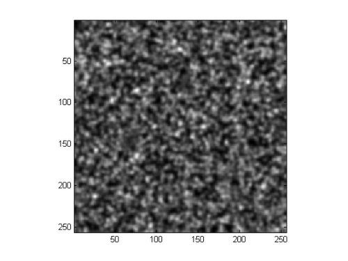 We can determine number densities and aggregation states using ICS. First, we calculate a 2D spatial autocorrelation function (SACF) for each image in the simulation which we created earlier:
ICS2DCorr = corrfunc(imageSeriesDiff);
The SACF of an image should be a 2D Gaussian. We can view the SACF for first image:
s=surf(ICS2DCorr(:,:,1)); axis tight colormap(jet) xlabel('\eta','FontSize',12) ylabel('\xi','FontSize',12) zlabel('r(\xi,\eta)','FontSize',12) set(s,'LineStyle','none') title('Spatial Autocorrelation Function for First Image')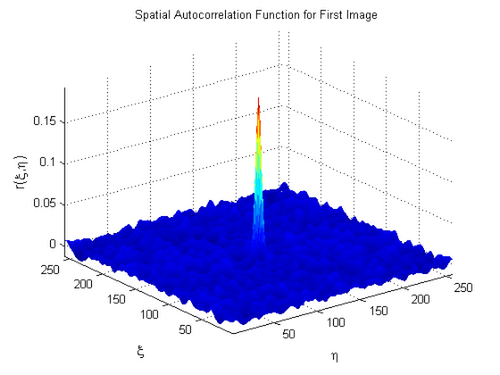
Next, we crop the stack of SACFs around the central peak, since the fitting algorithms work better when the noise at higher spatial lags is removed.
ICS2DCorrCrop = autocrop(ICS2DCorr,12);
As an example, let's look at the SACF of the first image to see how much was cropped:
s=surf(ICS2DCorrCrop(:,:,1)); axis tight colormap(jet) xlabel('\eta','FontSize',12) ylabel('\xi','FontSize',12) zlabel('r(\xi,\eta)','FontSize',12) set(s,'LineStyle','none') title('Cropped Spatial Autocorrelation Function for First Image')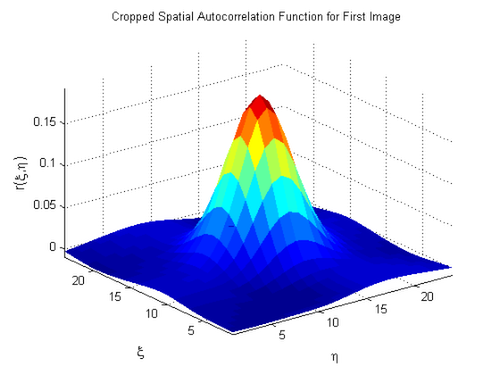
These cropped SACFs are fit to a 2D Gaussian:
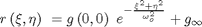
which can be accomplished by:
a = gaussfit(ICS2DCorrCrop,'2d',0.1,'n');
returing the fit parameters in a. Recall that 0.1 is the pixel size set in the simulation above, and the 'n' refers to no whitenoise (there would be whitenoise with real data). We can now plot the fitted Gaussian as well as the raw correlation function for the first image:
plotgaussfit(a(1,1:6),ICS2DCorrCrop(:,:,1),0.1,'n')
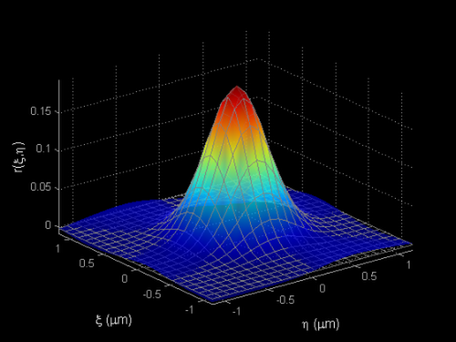 Finally, we can calculate the average cluster density using the amplitudes of the fitted Gaussians:
particlesPerBeamArea = 1/(mean(a(:,1))) beamArea = pi*mean(a(:,2))*mean(a(:,3)) density = particlesPerBeamArea/beamArea
particlesPerBeamArea =
4.9948
beamArea =
0.5091
density =
9.8104
density should be close to the 10 particles/um^2 which we set in the simulation.
We can extract diffusion coefficients and flow rates using TICS. First, we calculate the temporal autocorrelation function (TACF) for our diffusion simulation, given 1 second time sampling
GtDiff = tics(imageSeriesDiff,1);
For samples undergoing 2D diffusion, the TACF has the following analytical form:
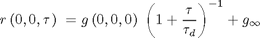
Let's fit the first 20 lags of the temporal autocorrelation function to the 2D diffusion model
diffCoeff = difffit(GtDiff(1:20,1),GtDiff(1:20,2));
Optimization terminated: relative function value changing by less than OPTIONS.TolFun.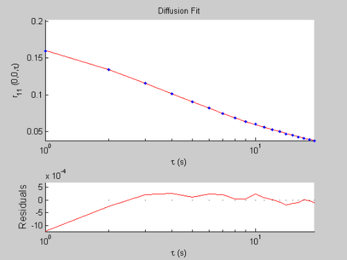
The diffusion coefficient can be calculated from the fitted parameter in diffCoeff and the beam waist of the laser:
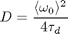
Or, in MATLAB:
w = mean(a(:,2)) D = w^2/(4*diffCoeff(2))
w =
0.4062
D =
0.0107
The beam radius, w, should be close to the set value, 0.4. The diffusion coefficient D, should be close to the set value 0.01.
STICS measures the velocity of flowing particles. Let's generates an image series with 5 particles/um^2 immobile, 5 particles/um^2 flowing with direction "down-left" i.e., x component 0.0707 um/s, y component -0.0707 um/s. The pixel size will be 0.06 um, and the time resolution 0.1 seconds.
This gives a total speed of sqrt(2(0.0707^2)) = 0.1 um/s.
imageSeriesFlow = simul8tr(256,256,100,[5 5],'none',[0 0],[1 1],0.06,0.1,'g',0.4,0,12,[0 0],[0.0707 0],[-0.0707 0],[0 0],0,0);
The function velocity performs the STICS analysis:
[Vx,Vy] = velocity(imageSeriesFlow,0.1,0.06,'y',20,'n')
Current plot held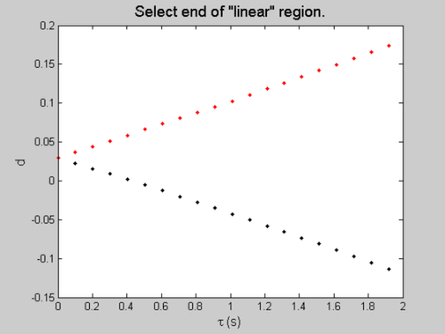
where the analysis was performed up to lag 20, 'y' denotes immobile filtering, with time resolution 0.1s and pixel size 0.06 um. 'n' denotes no whitenoise (there would be with real data). When prompted, select end of the "linear" region of the plot. Because this simulation has high S/N and temporal coherence, the plot should be linear over the range displayed. Just click somewhere on the right hand side (i.e., high tau) of the plot. Vx and Vy will be calculated, and should agree with the set velocity components of 0.071 and -0.071. The magnitude of the velocity measured by STICS is given by V:
V = sqrt(Vx^2+Vy^2)
V =
0.1052
V should be close to the set speed, 0.1um/s Let's compare this result with TICS. As with diffusion, we calculate the TACF, given 0.1 second temporal sampling:
GtFlow = tics(imageSeriesFlow,0.1);
For samples undergoing 2D flow, the TACF has the following analytical form:
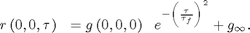
We can fit the first 60 lags of the simulation TACF to this model:
flowCoeff = flowfit(GtFlow(1:60,1),GtFlow(1:60,2));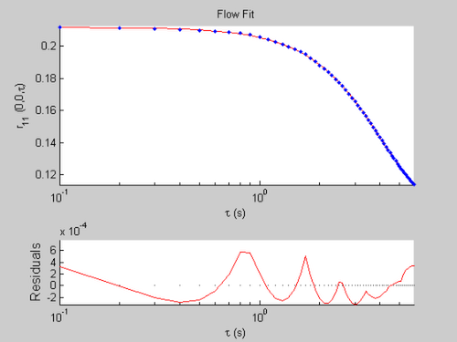
The flow speed can be calculated from this fit:
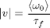
Or, in MATLAB:
v = w/flowCoeff(2)
v =
0.0977
v should be close to V, the speed recovered from the STICS analysis. Finally, we can calculate the % immobile:
percentImmobile = flowCoeff(3)/(flowCoeff(1)+flowCoeff(3))*100
percentImmobile = 46.5158
percentImmobile should be close to 50, the value set in the simulation.
Importing Image Series
A 16-bit Fluoview TIFF image series can be imported using rd_img16:
image_data=rd_img16(filename);
where filename a string which contains the filename to load. (e.g., 'C:\MyData\ImageSeries.tif'.) Similary, rd_imgser can load 8-bit RAW files:
image_data=rd_imgser(filename,sizex,sizey,numimg);
where sizex and sizey are the dimensions of an image, and numimg is the number of images in the series.
If the file is a Fluoview TIFF and the image series was collected on an Olympus microscope, FluoInfo can extract data collection parameters from the file header:
[XDim,YDim,TDim, PMTVoltage, PMTOffset, PMTGain, LaserPower] = FluoInfo(filename);
where XDim and YDim are the pixel sizes, in um, in the X and Y directions, and TDim is the time between images, in seconds. PMTVoltage, PMTOffset, and PMTGain, give the PMT settings, and LaserPower is the laser intensity, in percent.
Correcting for Background Noise
Background intensity counts can be subtracted from an image series using wnCorr:
imageSeriesCorrected = wnCorr(imageSeries);
You will be prompted to select a background region. Its mean will be subtracted from the image series.
Cropping a Region for Analysis
An image series can be cropped to select a region of interest using serimcrop:
croppedImageSeries = serimcrop(imageSeries);
You will be prompted to interactively select the region of interest.
Image correlation Spectroscopy (ICS)
[1] Petersen, N., P. Hoddelius, P. Wiseman, O. Seger, and K. Magnusson. 1993. Quantitation of membrane receptor distributions by image correlation spectroscopy: concept and application. Biophys. J. 65:1135-46. http://www.biophysj.org/cgi/content/abstract/65/3/1135
[2] Wiseman, P., and N. Petersen. 1999. Image correlation spectroscopy. II. optimization for ultrasensitive detection of preexisting platelet-derived growth factor-beta receptor oligomers on intact cells. Biophys. J. 76:963-77. http://www.biophysj.org/cgi/content/abstract/76/2/963
[3] Costantino, S., J. W. Comeau, D. L. Kolin, and P. W. Wiseman. 2005. Accuracy and dynamic range of spatial image correlation and cross-correlation spectroscopy. Biophys. J. 89:1251-1260. http://www.biophysj.org/cgi/content/abstract/89/2/1251
Temporal Image Correlation Spectroscopy (TICS)
[4] Wiseman, P., J. Squier, M. Ellisman, and K. Wilson. 2000. Two-photon image correlation spectroscopy and image cross-correlation spectroscopy. J. Microsc. 200:14-25. http://www.blackwell-synergy.com/doi/abs/10.1046/j.1365-2818.2000.00736.x and correction: http://www.blackwell-synergy.com/doi/full/10.1046/j.0022-2720.2001.001013.x
[5] Kolin, D. L., S. Costantino, and P. W. Wiseman. 2006. Sampling Effects, Noise, and Photobleaching in Temporal Image Correlation Spectroscopy. Biophys. J. 90:628-639. http://www.biophysj.org/cgi/content/abstract/90/2/628
Spatio-temporal Image Correlation Spectroscopy (STICS)
[6] Hebert, B., S. Costantino, and P. W. Wiseman. 2005. Spatiotemporal image correlation spectroscopy (STICS) theory, verification, and application to protein velocity mapping in living CHO cells. Biophys. J. 88:3601-3614. http://www.biophysj.org/cgi/content/abstract/88/5/3601
MATLAB Documentation
Getting started in MATLAB: http://www.mathworks.com/access/helpdesk/help/techdoc/learn_matlab/learn_matlab.html